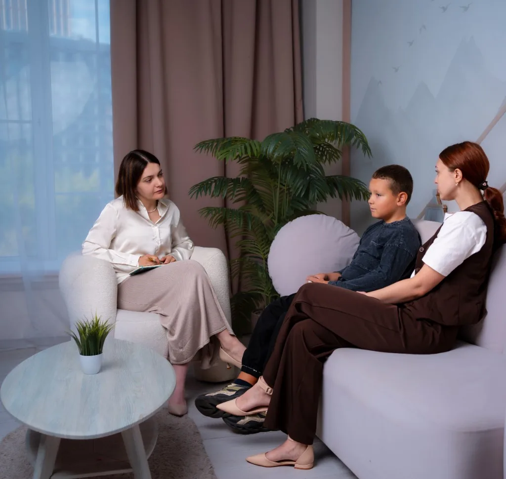

Оценка готовности к школе
Помогает понять, какие навыки уже сформированы и где может понадобиться поддержка перед началом обучения.
Диагностика
Диагностика помогает точнее понять особенности развития, эмоционального состояния, поведения и обучения, а также определить возможные направления поддержки.
Состав встреч и набор методик зависят от возраста и запроса. Ниже — типичные составляющие комплексной оценки.

ADOS-2 — стандартизированное наблюдение, которое помогает оценить особенности социального взаимодействия, коммуникации, игры и поведения у детей и подростков.
Специалист подбирает подходящий модуль по возрасту и уровню речи ребёнка, проводит обследование в формате структурированных заданий и обсуждает результаты с родителями. ADOS-2 является частью комплексной диагностики и не используется как единственное основание для постановки диагноза.
Помогает понять, какие навыки уже сформированы и где может понадобиться поддержка перед началом обучения.
Даёт ориентиры по сильным сторонам и зонам, требующим внимания в обучении и развитии.
Помогает разобраться в сложностях, связанных с освоением учебных навыков, и наметить шаги поддержки.
Уточняет картину эмоционального состояния и поведения в повседневной жизни.